Data Analysis with R and Git
Exploring and Analyzing Satellite and Gridded Data on Climate and Population with R and Git Code Tracking
Introduction : climate crisis
The world is facing a climate crisis : Earth’s temperature is currently approximately 1.1°C higher than it was in the late 1800s
Associated adversities and consequences: sea-level rise, droughts, water scarcity, severe fires, heatwaves, flooding, and catastrophic storms
Likely to profoundly impact human health, education, wealth, and socioeconomic well-being
Therefore, it is imperative nowadays to consider climate data in order to gain a comprehensive understanding of population issues
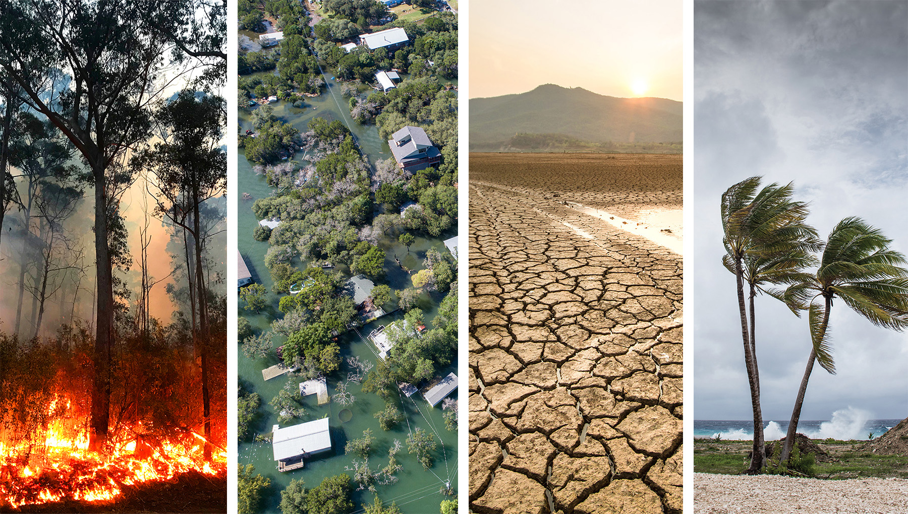
Another crisis : the reproducibility crisis
Another crisis affecting the world of research is the reproducibility crisis.
The
Gitversion control system is a tool that can be readily adoptedto enhance research replicability and
facilitate collaboration within the
Renvironment
Workshop Objectives:
This workshop aims to :
Equip researchers with the necessary tools to explore and utilize freely available gridded climate data in R
Instruct participants in best practices for replicability and open science, with GitHub integrated to R

Agenda of the day
- Welcoming coffee
- Gridded data overview
- Git introduction
- Coffee/ tea break
- Git Hands-on session
- R & Git Hands-on session : From gridded data to data frame
- Diner
Agenda of the day
- Welcoming coffee
- Gridded data overview
- Git introduction
- Coffee/ tea break
- Git Hands-on session
- R & Git Hands-on session : From gridded data to data frame
- Diner
CLIMATE GRIDDED DATA
Example of use of climate data in population research
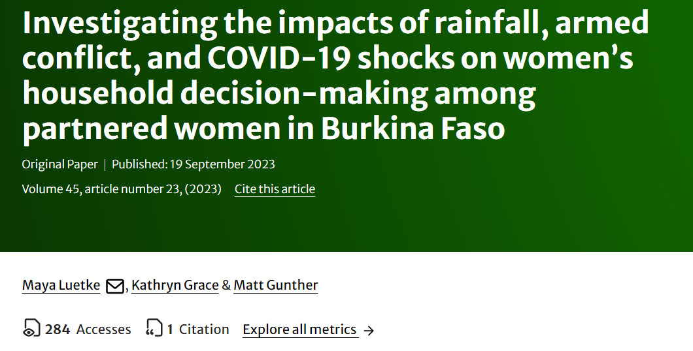
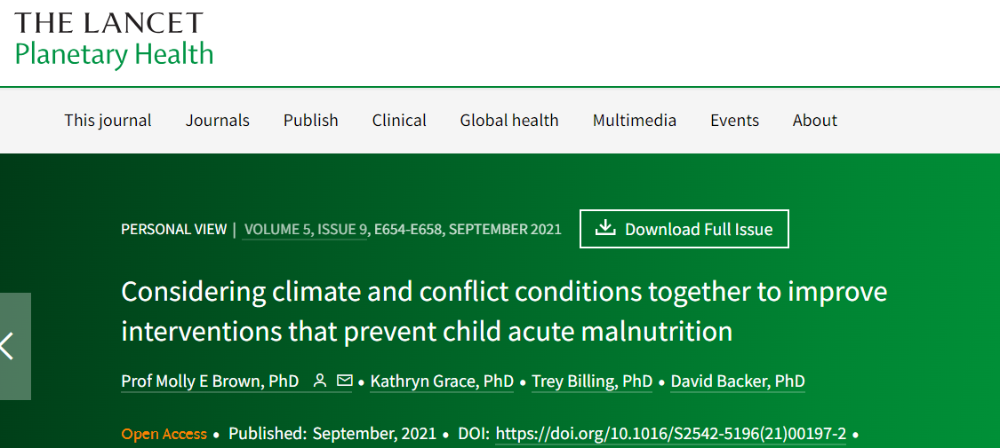
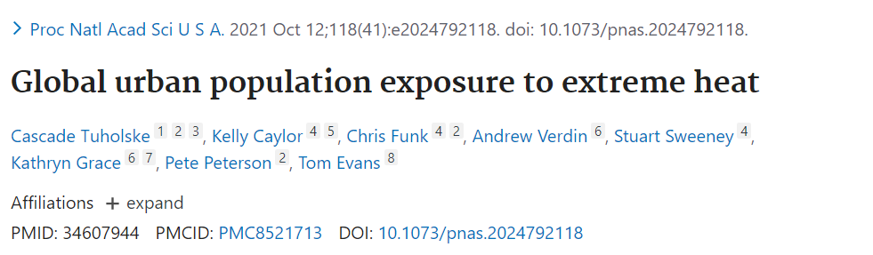
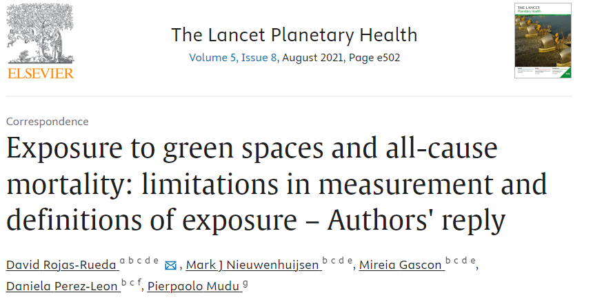
Climate and weather data
Traditionally when thinking of climate or weather data we think of data collected at weather stations
But…weather stations data are imperfect
local: Weather stations are more likely to be located in wealthier and more populated areas
they may hide microclimates nearby
Weather readings may be biased
Their number and coverage change, making it difficult to compare across regions or time ranges
Data products have been developed to mitigate these issues by combining many data sources and analysis method into a
gridded dataset
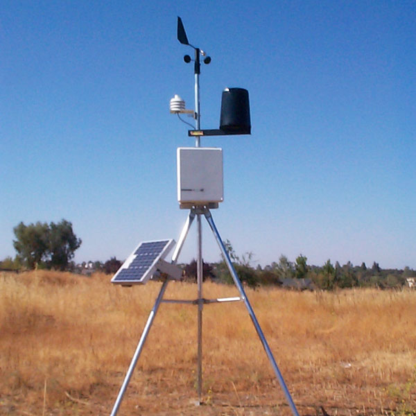
What is gridded data
Gridded dataprovides information on a regular grid, almost always either across latitude and longitude, but sometimes as distance north and east from a fixed point.The earth is divided into a latitude x longitude (x height)
grid, and one value for a variable (temperature, precipitation, etc.) is provided at each gridpoint and timestepMuch of observations for entire classes of variables , or over regions with sparse data coverage, comes from satellites
In their raw form, these data often are complex to work with
Fortunately … oftentimes these data are
pre-processedand assimilated into gridded datasets- for example, the CHIRPS rainfall dataset uses the TRMM satellite dataset as an input.
Satellite Data Processing Levels
Satellite data is available at different stages of processing, going from raw data collected from the satellite to polished products that visualize information and more usable for a broad array of applications.
There is a set of terminology that NASA uses to refer to the levels of processing it conducts:
Level 0 & 1 is the raw instrument data that may be time referenced. It is the most difficult to use.
Level 2 is Level 1 data that has been converted into a geophysical quantity through a computer algorithm (known as retrieval). This data is geo referenced and calibrated.
Level 3 is Level 2 data that has been mapped on a uniform space time grid and quality controlled.
Level 4 is Level 3 data that has been combined with models or other instrument data.
Satellite Data Processing Levels
Satellite data is available at different stages of processing, going from raw data collected from the satellite to polished products that visualize information and more usable for a broad array of applications.
There is a set of terminology that NASA uses to refer to the levels of processing it conducts:
Level 0 & 1 is the raw instrument data that may be time referenced. It is the most difficult to use.
Level 2 is Level 1 data that has been converted into a geophysical quantity through a computer algorithm (known as retrieval). This data is geo referenced and calibrated.
Level 3 is Level 2 data that has been mapped on a uniform space time grid and quality controlled.
Level 4 is Level 3 data that has been combined with models or other instrument data
Warning
- This processing is one of the sources of differences between data products, and for climate model output,
- Precipitation is a special beast. It is spatiotemporally highly heterogeneous (it can rain a lot in one place, and not rain at all on the other side of the hill, or an hour or a minute later) and difficult to measure accurately.
- Make sure to read studies evaluating your chosen data product - for example Dinku et al. 2018 for CHIRPS in Eastern Africa
- Continuous surface data are sometimes stored as triangulated irregular networks (TINs); these are not discussed here.
Rasters
gridded data is usually stored in a raster file format
A
rasteris a spatially explicit matrix or grid where each cell represents a geographic location. Each cell represents a pixel on a surface.Raster data is commonly used to represent spatially continuous phenomena such as elevation, temperature, air quality…
The size of each pixel defines the
resolutionor res of raster.The smaller the pixel size the finer the spatial resolution.
The
extentor spatial coverage of a raster is defined by the minima and maxima for both x and y coordinates.
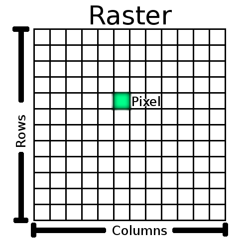
Other types spatial objects: vector data
- Spatial objects are usually represented by vector data
- Such data consists of a description of the “geometry” or “shape” of the objects , and normally also includes additional variables
- For example, a vector data set may represent the borders of the countries of the world (geometry), and also store their names
- The main vector data types:
points: has one coordinate pair, and n associated variableslines: are represented as ordered sets of coordinatespolygons: refers to a set of closed poly-linesnetwork: a special type of lines geometry where there is additional information about things like flow, connectivity, direction, and distance
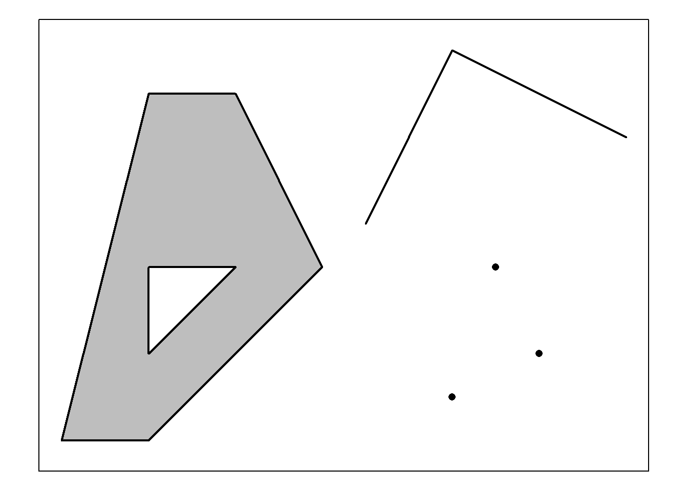
Coordinate Reference Systems (CRS)
- A very important aspect of spatial data is the coordinate reference system (CRS) that is used
- “projection” and “datum” refer to different aspects of the coordinate system used to represent the earth’s surface
- Datum is the reference frame or set of parameters used to define the coordinates of a map.
- The natural coordinate reference system for geographic data is longitude/latitude. This is an angular coordinate reference system..
- Datum are model used to calculate this angles
- The commonly used datum: World Geodetic System 1984 (WGS 84).
- A projection is a mathematical method for representing the curved surface of the earth on a flat map.
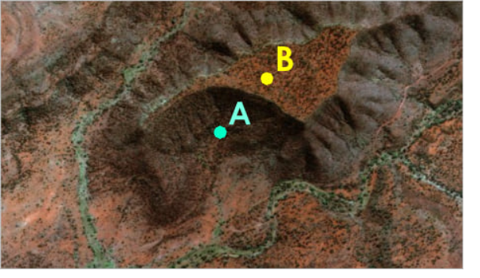
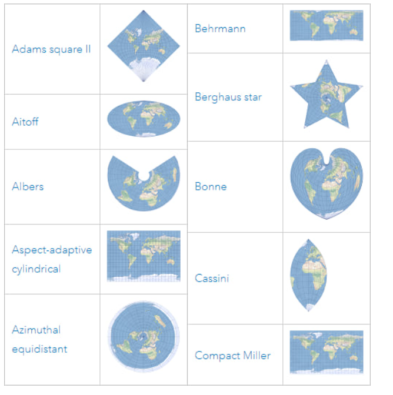
More details about CRS
- Different types of planar coordinate reference systems are referred to as “projections”
- Example: “Mercator”, “UTM”, “Robinson”, “Lambert”, “Sinusoidal” and “Albers”
- A planar CRS is defined by a projection, datum, and a set of parameters
- Most commonly used CRSs have been assigned a
EPSG code(EPSG stands for European Petroleum Survey Group) - EPSG code can be accessed here
- Vector data can be transformed from lon/lat coordinates to planar and back without loss of precision. This is not the case with raster data
Universal Transverse Mercator (UTM) CRS : used allover the world and good for distance calculation
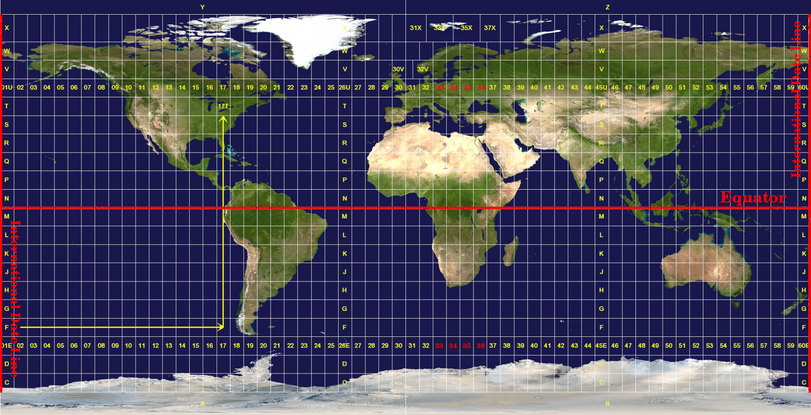
Some source for environmental gridded data
Precipitation: Climate Hazards Center InfraRed Precipitation (CHIRPS)
temperature: The NASA Goddard Institute for Space Studies temperature analysis dataset (GISTEMP-v4)
Vegetation : Normalized Difference Vegetation Index (NDVI)
Land Cover : Global Land Cover Mapping and Estimation Yearly 30 m V001
Human presence: Global Human Settlement Layer (GHSL)
Population : WorldPop gridded population estimate datasets
Downloading example for CHIRPS data
- Go to https://climateserv.servirglobal.net/map
- Select or draw your area
- type of request: raw data
- Dataset type: observation
- data source : UCSB CHIPS rainfall select period
- format (tif)
- range :01/01/2020 - 31/12/2024
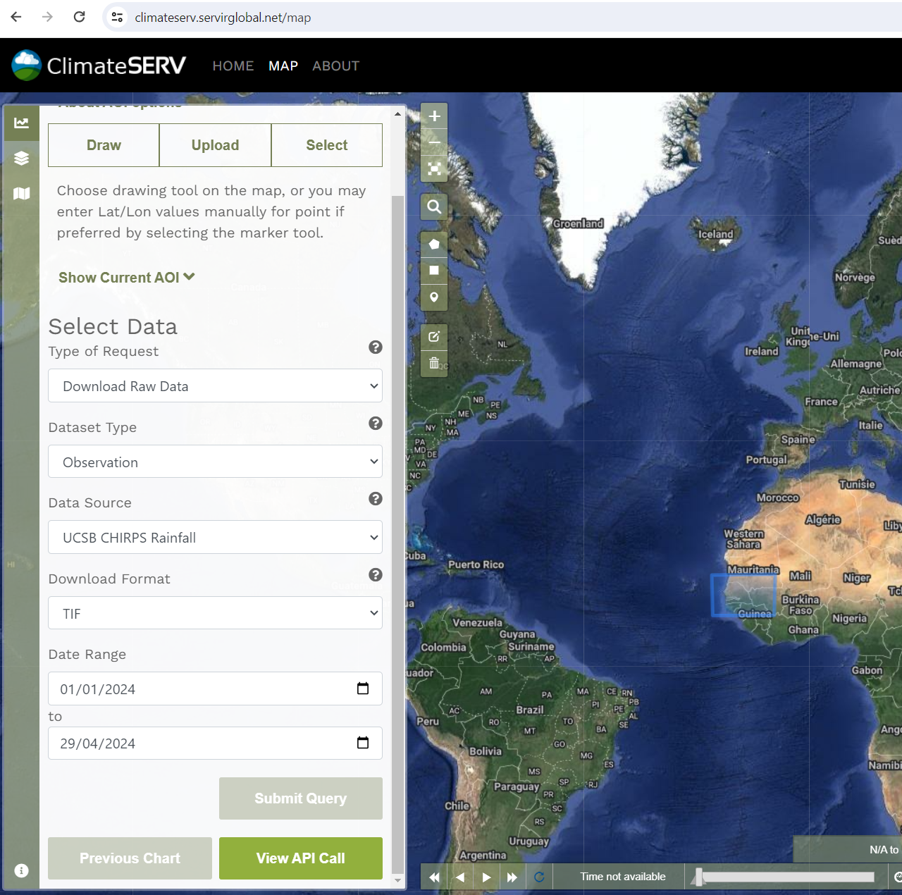
Source for shape file
There are many sources where you can download Shapefile data for countries, such as:
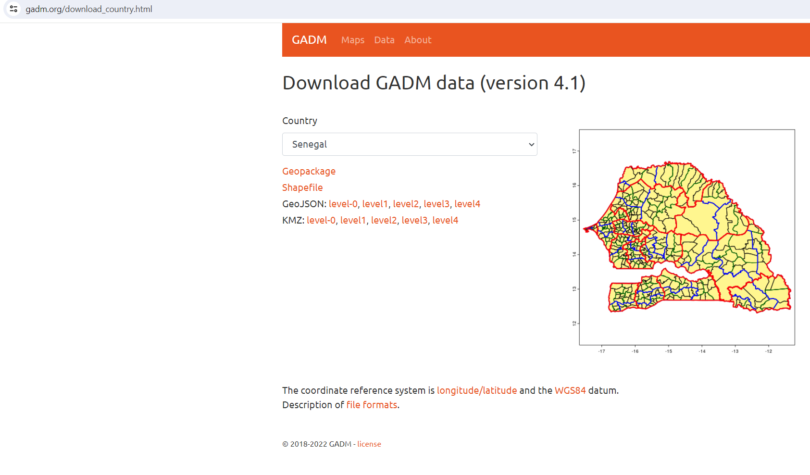
R necessary tolls to manipulate gridded data
To work with rasters and vector in R, we need some key packages,
sf:Support for simple features, a standardized way to encode spatial vector datastarts,terraorrasterto handle raster dataTerra replaces the raster package. The interfaces of Terra and raster are similar, but
Terrais simpler, faster and can do more.ggspatial: Spatial Data Framework for ggplot2 to map dataHere we will also use
tidyversefor data manipulation


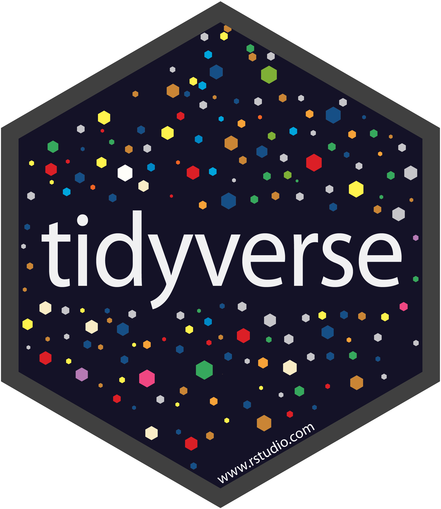
Git version control : Introduction to Github with RStudio
Practice session: From gridded data to data frame
Get ready to start
Clone this repository, or simply download the zip file
Open the file
WC_APC_R.Rprojincluded in this project folder- this will open RStudio in a new project environment.
Open
Analysis.qmdand begin following along with these code chunksInstall any necessary packages if not already installed using this command
load libraries
Raster files with terra package
stars, raster and terra packages allows to read rasters
terra package has only one object class for raster data, SpatRaster
A
SpatRasterrepresents a spatially referenced surface divided into three dimensional cells (rows, columns, and layers).When a SpatRaster is created from a file, it does not load the cell (pixel) values into memory (RAM).
It only reads the parameters that describe the geometry of the SpatRaster, such as the number of rows and columns and the coordinate reference system. The actual values will be read when needed.
Opening a single layer raster file
We open the file 20230508.tif located in the chirps_tif2 folder with rast command
Then we check the object created by displaying it
This output summaries the .tif file for August 5, 2023 (2023/05/08). Notice that there is:
- 181 rows of pixels
- 230 columns of pixels
- 1 layer named
20230508
Ploting the raster with ggplot/ggspatial
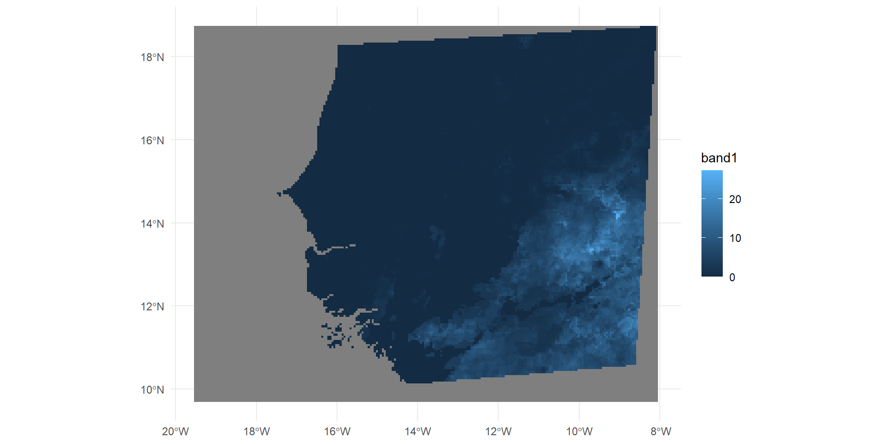
Opening the shapefile of Senegal using sf package
Reading layer `gadm41_SEN_2' from data source
`D:\CloudINED\Workshop_Raster_and_Git\WC_APC_R\data\shapefile_SEN\gadm41_SEN_2.shp'
using driver `ESRI Shapefile'
Simple feature collection with 45 features and 13 fields
Geometry type: MULTIPOLYGON
Dimension: XY
Bounding box: xmin: -17.54319 ymin: 12.30786 xmax: -11.34247 ymax: 16.69207
Geodetic CRS: WGS 84And plot with ggplot/ggspatial
And plot with ggplot/ggspatial
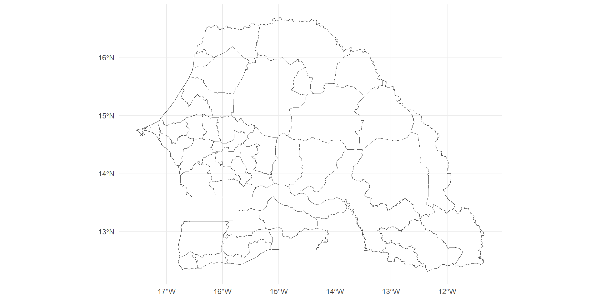
Mapping both objects
Mapping both objects
Checking CRS
Coordinate Reference System:
User input: WGS 84
wkt:
GEOGCRS["WGS 84",
DATUM["World Geodetic System 1984",
ELLIPSOID["WGS 84",6378137,298.257223563,
LENGTHUNIT["metre",1]]],
PRIMEM["Greenwich",0,
ANGLEUNIT["degree",0.0174532925199433]],
CS[ellipsoidal,2],
AXIS["latitude",north,
ORDER[1],
ANGLEUNIT["degree",0.0174532925199433]],
AXIS["longitude",east,
ORDER[2],
ANGLEUNIT["degree",0.0174532925199433]],
ID["EPSG",4326]]Coordinate Reference System:
User input: WGS 84
wkt:
GEOGCRS["WGS 84",
ENSEMBLE["World Geodetic System 1984 ensemble",
MEMBER["World Geodetic System 1984 (Transit)"],
MEMBER["World Geodetic System 1984 (G730)"],
MEMBER["World Geodetic System 1984 (G873)"],
MEMBER["World Geodetic System 1984 (G1150)"],
MEMBER["World Geodetic System 1984 (G1674)"],
MEMBER["World Geodetic System 1984 (G1762)"],
MEMBER["World Geodetic System 1984 (G2139)"],
ELLIPSOID["WGS 84",6378137,298.257223563,
LENGTHUNIT["metre",1]],
ENSEMBLEACCURACY[2.0]],
PRIMEM["Greenwich",0,
ANGLEUNIT["degree",0.0174532925199433]],
CS[ellipsoidal,2],
AXIS["geodetic latitude (Lat)",north,
ORDER[1],
ANGLEUNIT["degree",0.0174532925199433]],
AXIS["geodetic longitude (Lon)",east,
ORDER[2],
ANGLEUNIT["degree",0.0174532925199433]],
USAGE[
SCOPE["Horizontal component of 3D system."],
AREA["World."],
BBOX[-90,-180,90,180]],
ID["EPSG",4326]]- Should be done at the beginning!
Example of working with spatial objects that have different CRS
Load a new shapefile of senegal
Reading layer `gadm41_SEN_3' from data source
`D:\CloudINED\Workshop_Raster_and_Git\WC_APC_R\data\shapefile_SEN_test\gadm41_SEN_3.shp'
using driver `ESRI Shapefile'
Simple feature collection with 45 features and 13 fields
Geometry type: MULTIPOLYGON
Dimension: XY
Bounding box: xmin: 226184.4 ymin: 1362012 xmax: 897104.6 ymax: 1845491
Projected CRS: WGS 84 / UTM zone 28NOpen the .tif file as a raster instead of spatraster using starts package
prec_20230508_rast <- read_stars(here::here("data", "chirps_tif2", "20230508.tif"))
#checking crs
st_crs(prec_20230508_rast)Coordinate Reference System:
User input: WGS 84
wkt:
GEOGCRS["WGS 84",
ENSEMBLE["World Geodetic System 1984 ensemble",
MEMBER["World Geodetic System 1984 (Transit)"],
MEMBER["World Geodetic System 1984 (G730)"],
MEMBER["World Geodetic System 1984 (G873)"],
MEMBER["World Geodetic System 1984 (G1150)"],
MEMBER["World Geodetic System 1984 (G1674)"],
MEMBER["World Geodetic System 1984 (G1762)"],
MEMBER["World Geodetic System 1984 (G2139)"],
ELLIPSOID["WGS 84",6378137,298.257223563,
LENGTHUNIT["metre",1]],
ENSEMBLEACCURACY[2.0]],
PRIMEM["Greenwich",0,
ANGLEUNIT["degree",0.0174532925199433]],
CS[ellipsoidal,2],
AXIS["geodetic latitude (Lat)",north,
ORDER[1],
ANGLEUNIT["degree",0.0174532925199433]],
AXIS["geodetic longitude (Lon)",east,
ORDER[2],
ANGLEUNIT["degree",0.0174532925199433]],
USAGE[
SCOPE["Horizontal component of 3D system."],
AREA["World."],
BBOX[-90,-180,90,180]],
ID["EPSG",4326]]And we plot with the stars and sf package
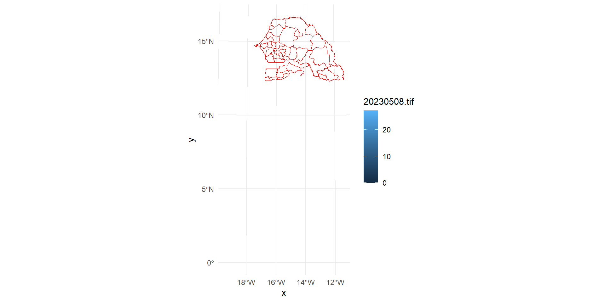
Solving projection issues
- Transforming CRS of the vector file
Coordinate Reference System:
User input: WGS 84
wkt:
GEOGCRS["WGS 84",
ENSEMBLE["World Geodetic System 1984 ensemble",
MEMBER["World Geodetic System 1984 (Transit)"],
MEMBER["World Geodetic System 1984 (G730)"],
MEMBER["World Geodetic System 1984 (G873)"],
MEMBER["World Geodetic System 1984 (G1150)"],
MEMBER["World Geodetic System 1984 (G1674)"],
MEMBER["World Geodetic System 1984 (G1762)"],
MEMBER["World Geodetic System 1984 (G2139)"],
ELLIPSOID["WGS 84",6378137,298.257223563,
LENGTHUNIT["metre",1]],
ENSEMBLEACCURACY[2.0]],
PRIMEM["Greenwich",0,
ANGLEUNIT["degree",0.0174532925199433]],
CS[ellipsoidal,2],
AXIS["geodetic latitude (Lat)",north,
ORDER[1],
ANGLEUNIT["degree",0.0174532925199433]],
AXIS["geodetic longitude (Lon)",east,
ORDER[2],
ANGLEUNIT["degree",0.0174532925199433]],
USAGE[
SCOPE["Horizontal component of 3D system."],
AREA["World."],
BBOX[-90,-180,90,180]],
ID["EPSG",4326]]Coordinate Reference System:
User input: WGS 84
wkt:
GEOGCRS["WGS 84",
ENSEMBLE["World Geodetic System 1984 ensemble",
MEMBER["World Geodetic System 1984 (Transit)"],
MEMBER["World Geodetic System 1984 (G730)"],
MEMBER["World Geodetic System 1984 (G873)"],
MEMBER["World Geodetic System 1984 (G1150)"],
MEMBER["World Geodetic System 1984 (G1674)"],
MEMBER["World Geodetic System 1984 (G1762)"],
MEMBER["World Geodetic System 1984 (G2139)"],
ELLIPSOID["WGS 84",6378137,298.257223563,
LENGTHUNIT["metre",1]],
ENSEMBLEACCURACY[2.0]],
PRIMEM["Greenwich",0,
ANGLEUNIT["degree",0.0174532925199433]],
CS[ellipsoidal,2],
AXIS["geodetic latitude (Lat)",north,
ORDER[1],
ANGLEUNIT["degree",0.0174532925199433]],
AXIS["geodetic longitude (Lon)",east,
ORDER[2],
ANGLEUNIT["degree",0.0174532925199433]],
USAGE[
SCOPE["Horizontal component of 3D system."],
AREA["World."],
BBOX[-90,-180,90,180]],
ID["EPSG",4326]]Ploting again with the projected shape file using stars and sf apackage
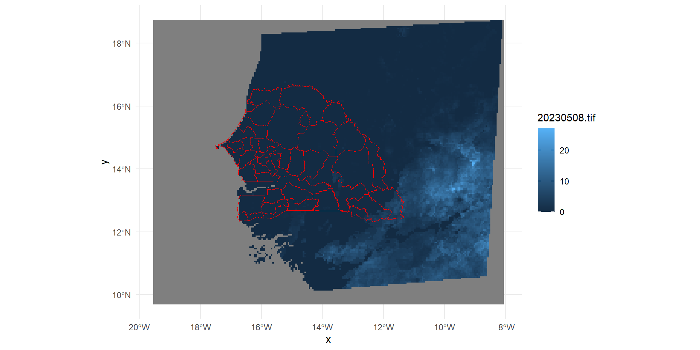
ggspatial takes care of reprojecting the raster such that it aligns with other datasets

Croping a raster
It is important to have the same CRS here
It will not work otherwise. The command bellow gives an error message
- The one bellow works because the 2 objects have the same CRS
class : SpatRaster
dimensions : 88, 124, 1 (nrow, ncol, nlyr)
resolution : 0.05, 0.05 (x, y)
extent : -17.55, -11.35, 12.3, 16.7 (xmin, xmax, ymin, ymax)
coord. ref. : lon/lat WGS 84 (EPSG:4326)
source(s) : memory
varname : 20230508
name : 20230508
min value : 0.000000
max value : 9.775918 class : SpatRaster
dimensions : 181, 230, 1 (nrow, ncol, nlyr)
resolution : 0.05, 0.05 (x, y)
extent : -19.55, -8.049997, 9.699999, 18.75 (xmin, xmax, ymin, ymax)
coord. ref. : lon/lat WGS 84 (EPSG:4326)
source : 20230508.tif
name : 20230508 Saving raster data
- Sometime you may want to save cropped raster data or some data modified
Extracting raster values for a polygon
exactextractpackage provides a fast and accurate algorithm for summarizing values in the portion of a raster dataset that is covered by a polygon,- Unlike other zonal statistics implementations, it takes into account raster cells that are partially covered by the polygon
prec_by_districts <- exactextractr::exact_extract(
prec_20230508,
senegal,
fun = "mean"
) %>%
as.data.frame() %>%
dplyr::rename_with(
~ifelse(
stringr::str_detect(.x, "\\."),
paste0("chirps")
)
) #%>%
|
| | 0%
|
|== | 2%
|
|=== | 4%
|
|===== | 7%
|
|====== | 9%
|
|======== | 11%
|
|========= | 13%
|
|=========== | 16%
|
|============ | 18%
|
|============== | 20%
|
|================ | 22%
|
|================= | 24%
|
|=================== | 27%
|
|==================== | 29%
|
|====================== | 31%
|
|======================= | 33%
|
|========================= | 36%
|
|========================== | 38%
|
|============================ | 40%
|
|============================== | 42%
|
|=============================== | 44%
|
|================================= | 47%
|
|================================== | 49%
|
|==================================== | 51%
|
|===================================== | 53%
|
|======================================= | 56%
|
|======================================== | 58%
|
|========================================== | 60%
|
|============================================ | 62%
|
|============================================= | 64%
|
|=============================================== | 67%
|
|================================================ | 69%
|
|================================================== | 71%
|
|=================================================== | 73%
|
|===================================================== | 76%
|
|====================================================== | 78%
|
|======================================================== | 80%
|
|========================================================== | 82%
|
|=========================================================== | 84%
|
|============================================================= | 87%
|
|============================================================== | 89%
|
|================================================================ | 91%
|
|================================================================= | 93%
|
|=================================================================== | 96%
|
|==================================================================== | 98%
|
|======================================================================| 100% chirps
Min. :0.000000
1st Qu.:0.000000
Median :0.000000
Mean :0.097843
3rd Qu.:0.009242
Max. :2.460601 - So, extract() returns a data.frame, where ID values represent the corresponding row number in the polygons data.
Summary of the values
Working with multilayer raster
You can stack multiple raster layers of the same spatial resolution and extent to create a RasterStack using raster::stack() or RasterBrick using raster::brick().
Bur rast of terra package is more powerful
Often times, processing a multi-layer object has computational advantages over processing multiple single-layer one by one
#--- the list of path to the files ---#
files_list <- c("data/chirps_tif2/20200131.tif", "data/chirps_tif2/20200201.tif")
#--- read the two at the same time ---#
multi_layerraster<- rast(files_list)
multi_layerrasterclass : SpatRaster
dimensions : 181, 230, 2 (nrow, ncol, nlyr)
resolution : 0.05, 0.05 (x, y)
extent : -19.55, -8.049997, 9.699999, 18.75 (xmin, xmax, ymin, ymax)
coord. ref. : lon/lat WGS 84 (EPSG:4326)
sources : 20200131.tif
20200201.tif
names : 20200131, 20200201 Working with all files in a single folder as a list
#first import all files in a single folder as a list
rastlist <- list.files(path = "data/chirps_tif2", pattern='.tif$', all.files= T, full.names= T)
#--- read the all at the same time ---#
allprec <- terra::rast(rastlist)
allprecclass : SpatRaster
dimensions : 181, 230, 1431 (nrow, ncol, nlyr)
resolution : 0.05, 0.05 (x, y)
extent : -19.55, -8.049997, 9.699999, 18.75 (xmin, xmax, ymin, ymax)
coord. ref. : lon/lat WGS 84 (EPSG:4326)
sources : 20200131.tif
20200201.tif
20200202.tif
... and 1428 more source(s)
names : 20200131, 20200201, 20200202, 20200203, 20200204, 20200205, ... Or even better… create one multi-layered raster for each year
# first we create a year list
years <- map(2020:2023, ~{
list.files("data/chirps_tif2/", pattern = paste0("^", .x), full.names = TRUE)
})
# rename the list
years <- set_names(years, 2020:2023)
#create a multi-layer raster per year and store all years in one large list
years <- years %>% map(~.x %>% rast)class : SpatRaster
dimensions : 181, 230, 336 (nrow, ncol, nlyr)
resolution : 0.05, 0.05 (x, y)
extent : -19.55, -8.049997, 9.699999, 18.75 (xmin, xmax, ymin, ymax)
coord. ref. : lon/lat WGS 84 (EPSG:4326)
sources : 20200131.tif
20200201.tif
20200202.tif
... and 333 more source(s)
names : 20200131, 20200201, 20200202, 20200203, 20200204, 20200205, ... Yearly rainfall accumulation
class : SpatRaster
dimensions : 181, 230, 1 (nrow, ncol, nlyr)
resolution : 0.05, 0.05 (x, y)
extent : -19.55, -8.049997, 9.699999, 18.75 (xmin, xmax, ymin, ymax)
coord. ref. : lon/lat WGS 84 (EPSG:4326)
source(s) : memory
name : sum
min value : 31.33906
max value : 3667.94553 Creating a raster of 1 layer per year
class : SpatRaster
dimensions : 181, 230, 4 (nrow, ncol, nlyr)
resolution : 0.05, 0.05 (x, y)
extent : -19.55, -8.049997, 9.699999, 18.75 (xmin, xmax, ymin, ymax)
coord. ref. : lon/lat WGS 84 (EPSG:4326)
source(s) : memory
names : 2020, 2021, 2022, 2023
min values : 31.33906, 13.21418, 20.95967, 30.37898
max values : 3667.94553, 3181.17660, 3376.25148, 3772.79642 For every pixel (0.05 degrees lat by 0.05 degree lon), we now have the total seasonal rainfall accumulation for every year 2020-2023.
Let us plot it for 2020
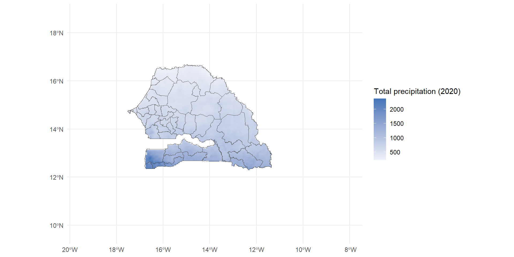
We can now extract the values per districts or any area of interest for our study
We extract mean values by districts, rename columns and merge with senegal borders shapefile
tot_yearly_prec_by_dep <- exactextractr::exact_extract(
chirps_yearly_sum,
senegal,
fun = "mean"
) %>%
dplyr::rename_with(
~ifelse(
stringr::str_detect(.x, "\\."),
paste0("chirps", .)
)
) %>%
bind_cols(senegal, .)
|
| | 0%
|
|== | 2%
|
|=== | 4%
|
|===== | 7%
|
|====== | 9%
|
|======== | 11%
|
|========= | 13%
|
|=========== | 16%
|
|============ | 18%
|
|============== | 20%
|
|================ | 22%
|
|================= | 24%
|
|=================== | 27%
|
|==================== | 29%
|
|====================== | 31%
|
|======================= | 33%
|
|========================= | 36%
|
|========================== | 38%
|
|============================ | 40%
|
|============================== | 42%
|
|=============================== | 44%
|
|================================= | 47%
|
|================================== | 49%
|
|==================================== | 51%
|
|===================================== | 53%
|
|======================================= | 56%
|
|======================================== | 58%
|
|========================================== | 60%
|
|============================================ | 62%
|
|============================================= | 64%
|
|=============================================== | 67%
|
|================================================ | 69%
|
|================================================== | 71%
|
|=================================================== | 73%
|
|===================================================== | 76%
|
|====================================================== | 78%
|
|======================================================== | 80%
|
|========================================================== | 82%
|
|=========================================================== | 84%
|
|============================================================= | 87%
|
|============================================================== | 89%
|
|================================================================ | 91%
|
|================================================================= | 93%
|
|=================================================================== | 96%
|
|==================================================================== | 98%
|
|======================================================================| 100%[1] "sf" "data.frame"We now want to merge with a demographic data by departement
We first load the demodata
We check the departement variable in the 2 datasets
[1] 45
BAKEL BAMBEY BIGNONA BIRKELANE
1142 2666 2405 968
BOUNKILING DAGANA DAKAR DIOURBEL
1347 2195 10417 2433
FATICK FOUNDIOUGNE GOSSAS GOUDIRY
3118 2549 871 982
GOUDOMP GUEDIAWAYE GUINGUINEO KAFFRINE
1439 3102 1009 1869
KANEL KAOLACK KEBEMER KEDOUGOU
2208 4387 2323 687
KOLDA KOUMPENTOUM KOUNGHEUL LINGUERE
2295 1175 1534 2221
LOUGA MALEM HODDAR MATAM MBACKE
3430 874 2505 8112
MBOUR MEDI0 YORO FOULAH NIORO OUSSOUYE
6109 1285 3206 447
PIKINE PODOR RANEROU RUFISQUE
10450 3333 500 4498
SAINT-LOUIS SALEMATA SARAYA SEDHIOU
2588 172 419 1391
TAMBACOUNDA THIES TIVAOUANE VELINGARA
2680 6055 4034 2578
ZIGUINCHOR
2244 [1] 45
Bakel Bambey Bignona Birkilane
1 1 1 1
Bounkiling Dagana Dakar Diourbel
1 1 1 1
Fatick Foundiougne Gossas Goudiry
1 1 1 1
Goudomp Guédiawaye Guinguinéo Kaffrine
1 1 1 1
Kanel Kaolack Kébémer Kédougou
1 1 1 1
Kolda Koungheul Koupentoum Linguère
1 1 1 1
Louga Malème Hodar Matam Mbacké
1 1 1 1
Mbour Médina Yoro Foula Nioro du Rip Oussouye
1 1 1 1
Pikine Podor Ranérou Ferlo Rufisque
1 1 1 1
Saint-Louis Salémata Saraya Sédhiou
1 1 1 1
Tambacounda Thiès Tivaouane Vélingara
1 1 1 1
Ziguinchor
1 We correct department names string before we merge
The name of our demodata is uppercase while in precipitation data it is lowercase
We also need to correct some names written differently in the 2 datasets
# We correct inconsistent names
tot_yearly_prec_by_dep <- tot_yearly_prec_by_dep %>%
mutate(DEPARTEMENT =case_when( DEPARTEMENT== "BIRKILANE" ~ "BIRKELANE",
DEPARTEMENT== "KOUPENTOUM" ~ "KOUMPENTOUM",
DEPARTEMENT== "MALEME HODAR" ~ "MALEM HODDAR",
DEPARTEMENT== "MEDINA YORO FOULA" ~ "MEDI0 YORO FOULAH",
DEPARTEMENT== "NIORO DU RIP" ~ "NIORO",
DEPARTEMENT== "RANEROU FERLO" ~ "RANEROU",
TRUE ~ DEPARTEMENT
))We can now merge our precipitation data with our demodata
Save the datasets to work later with it
save(df_merged, senegal, file="data/modified_data/df_merged.Rda")
st_write(
senegal,
here::here("data", "modified_data", "senegal.geojson"),
delete_dsn = TRUE
) Deleting source `D:/CloudINED/Workshop_Raster_and_Git/WC_APC_R/data/modified_data/senegal.geojson' using driver `GeoJSON'
Writing layer `senegal' to data source
`D:/CloudINED/Workshop_Raster_and_Git/WC_APC_R/data/modified_data/senegal.geojson' using driver `GeoJSON'
Writing 45 features with 13 fields and geometry type Multi Polygon.Acknowlegement
This Workshop was sponsored by the French Institute for Demographic Studies (INED) through the Laboratory of excellence “Individuals, Populations, Societies” (Labex iPOPs)
THANK YOU FOR YOUR ATTENTION
Contact
Arlette Simo Fotso (Researcher, INED) : arlette.simo-fotso@ined.fr
Ariane SESSEGO (PhD student, INED) : ariane.sessego@ined.fr
APC workshop, 19 May 2024